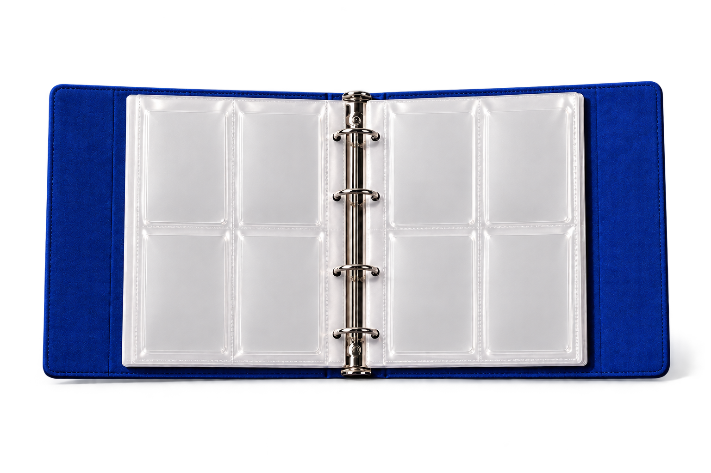

Luster
About
GitHub

SMALL
SHIFTS
BRIGHTER
WORLDS
—
MATERIALS
LIGHT
PERSPECTIVE
PLAY
—
01 / 08
Foil layer
‹
›
Preparing light
0 / 8
左右移动倾斜卡册 · 悬停卡牌向上抽出
Album
Material
Album
Material
Sample
Auto rotate
Presets
Rendering
B11
B14
Light treatment
Preset
B14
B11
Reset
Reflection on
检查
完整
反光
法线
范围
间距
停留循环
恢复范围
均匀覆膜
关闭关联
恢复关联